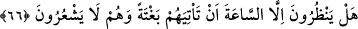
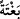
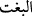

oldular. Bir grup ona îman edip “Îsâ (a.s.) Allah’ın kulu ve rasûlüdür” dediler. Bir
gurup “o üçün üçüncüsüdür” dediler. Onu ilah bilerek ona ibâdet ettiler. Bir grup ise
“Îsâ, Allah’ın oğludur” dediler. Allah Teâlâ, bu zâlimlerin dediklerinden çok yüce ve
pek münezzehtir. Bir grup da onu inkâr ettiler, peygamberliğini yalanlayıp ona zulüm ve
haksızlıkda bulundular. Ve onu öldürmek istediler. Bu yüzden Allah Teâlâ o zâlim
müşrikler hakkında “vay o zulmedenlerin hâline!” buyurmuştur. Âyette, onların
zâlimliklerini tescîl için zamir yerine ism-i zâhir getirilmiştir. O gün kıyâmet günüdür.
Bundan maksad, “azabı acı olan gündür.” Bu ifâde, “rüzgarı fırtınalı olan bir gün”
anlamında kullanılan “yevmün âsıfun: fırtınalı gün” (bk. İbrâhim, 14/18) ifâdesine
benzer.
66. Onlar farkında değillerken kıyâmet gününün kendilerine ansızın gelmesinden
başka bir şey mi bekliyorlar?
“Onlar” insanlar “farkında değillerken” onu beklemedikleri, ondan gâflet içinde
dünya işiyle meşgul bulundukları ve o saati inkâr ettikleri bir sırada “kıyâmet gününün
kendilerine ansızın gelmesinden başka bir şey mi bekliyorlar?”
Kıyâmet hiç şüphesiz, mutlaka geleceğinden sanki onlar onu bekliyorlar gibi kabul
edildiler. “/bağteh” kelimesi mefulu mutlak mevkiinde mensup olup “âni bir gelişle”
demektir. “/bağt” bir şeyin hiç hesap edilmeden ansızın gelmesi demektir.
Müfredat’ta böyledir. Irşâd’da şöyle denilmektedir: Kıyâmet, ancak onların kıyâmeti
bekleme durumunda olmayıp dünya işleriyle meşgul bulundukları, kıyâmeti inkâr edici
bir tavır sergiledikleri ve kıyâmetten tamamen gâfil oldukları bir zamanda ansızın
gelecektir. Âyetin “farkında değillerken” kısmı bunu anlatmaktadır. Onlar bunun gelişini
hiç anlayamazlar.
Bütün insanlar amellerine göre karşılık göreceklerdir. Burada “ansızın” sözü
“farkında değillerken” sözüyle aynı mânâyı ifâde etmez ki buna ihtiyaç duyulmasın. Zîrâ
bazen bir şeyin farkında olunur, ona hazırlıklı da olunur, o da ansızın gelir. Zîrâ bir
şeyin geleceği vakit bilinmeyince, o şey her ne zaman gelse ansızın sayılır. Bazen de bir
şey, kişi ondan gaflet içinde, onu inkâr edip dururken ansızın geliverir. İşte burada
kasdedilen bu ikinci kısımdır. Bu sebeple kıyâmetin ansızın gelmesi “farkında
değillerken” hâl cümlesinin mânâsıyla kayıtlanmıştır.
Akıllı insan, ölüm günü olan o acı günün azâbı gelmeden her günahtan sıyrılıp
çıkmalı, her suç ve hatâya tevbe etmelidir. Zîrâ azap melekleri o gün zâlimlere gelip pis
ruhlarının ağır işkencelerle çıkması için onlara baskı ve şiddet uygulayacaklardır.
Hadis-i şerifte şöyle buyrulur: “Müminin amel defterinde her gün yeni bir sayfa açılır.
Şâyet o sayfada gün içinde bir tevbe, istiğfâr, af ve mağfiret talebi olmazsa o sayfa